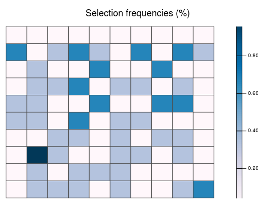

Plot object
This function plots the solutions contained in RapSolved objects. It can be used to show a single solution, or the the selection frequencies of planning
units contained in a single RapSolved object. Additionally, two RapSolved objects can be supplied to plot the differences between them.
# S4 method for RapSolved,numeric plot(x, y, basemap = "none", pu.color.palette = c("#e5f5f9", "#00441b", "#FFFF00", "#FF0000"), alpha = ifelse(basemap == "none", 1, 0.7), grayscale = FALSE, main = NULL, force.reset = FALSE) # S4 method for RapSolved,missing plot(x, y, basemap = "none", pu.color.palette = c("PuBu", "#FFFF00", "#FF0000"), alpha = ifelse(basemap == "none", 1, 0.7), grayscale = FALSE, main = NULL, force.reset = FALSE) # S4 method for RapSolved,RapSolved plot(x, y, i = NULL, j = i, basemap = "none", pu.color.palette = ifelse(is.null(i), c("RdYlBu", "#FFFF00", "#FF0000"), "Accent"), alpha = ifelse(basemap == "none", 1, 0.7), grayscale = FALSE, main = NULL, force.reset = FALSE)
Arguments
- x
RapSolvedobject.- y
NULLto plot selection frequencies.numericto plot the i'th solution, or 0 to plot the best solution.RapSolvedobject to plot differences in solutions between objects. Defaults toULL.- basemap
characterobject indicating the type of basemap to use (seelink{basemap}). Use either 'none', 'roadmap', 'mobile', 'satellite', 'terrain', 'hybrid', 'mapmaker-roadmap', 'mapmaker-hybrid'. Defaults to 'none'.- pu.color.palette
charactername of colors or color palette (brewer.pal) to indicate planning unit statuses. Defaults toc('grey30', 'green', 'yellow', 'black', 'gray80', 'red', 'orange').- alpha
numericvalue to indicate how transparent the planning unit colors should be.- grayscale
logicalshould the basemap be gray-scaled?- main
charactertitle for the plot. Defaults toNULLand a default title is used.- force.reset
logicalif basemap data has been cached, should it be re-downloaded?- i
NULLto plot selection frequencies.numericto plot the i'th solution, or 0 to plot the best solution. Only used whenyis aRapSolvedobject. Defaults toNULL.- j
NULLto plot selection frequencies.numericto plot the i'th solution, or 0 to plot the best solution. Only used whenyis aRapSolvedobject. Defaults toj.
See also
RapSolved.
Examples
# load data data(sim_rs) ## simulated species examples # plot selection frequencies plot(sim_rs)# plot best solution plot(sim_rs, 0)# plot second solution plot(sim_rs, 2)# plot different between best and second solutions plot(sim_rs, sim_rs, 0 ,2)